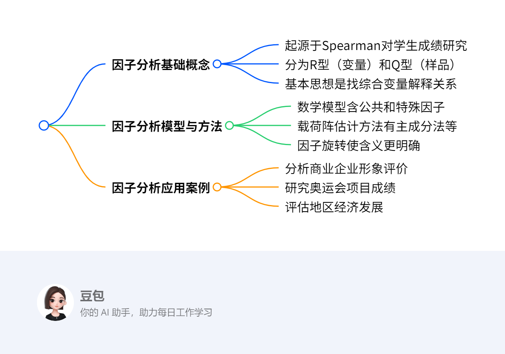

第八章：因子分析¶
总览¶
一段话总结¶
因子分析是通过对研究变量的信息矩阵分析，找出少数综合变量（因子）解释多个可观测变量间复杂关系的方法。它源于Spearman对学生考试成绩的研究，主要有R型（对变量）和Q型（对样品）两种类型。其数学模型包含公共因子和特殊因子，因子载荷阵估计方法多样，如主成分法等。因子旋转可使因子含义更明确，还可通过最小二乘法、回归法等计算因子得分，在商业、体育、经济等多领域广泛应用，如分析企业形象评价、奥运会项目成绩、地区经济发展、消费者偏好等。
¶
详细总结¶
- 因子分析的起源与基本概念
- 起源：1904年Charles Spearman发表论文《对智力测验得分进行统计分析》，研究学生考试成绩，成为因子分析的起点。他发现学生各科考试成绩间存在某种潜在联系，提出最初的因子分析模型 \(X_{i}=a_{i}F+\varepsilon_{i}\)。
- 基本思想：通过分析研究变量的信息矩阵（协方差阵、相关系数矩阵或样品相似系数矩阵），找出少数几个不可观测的综合变量（因子），描述原始变量间的相关或相似关系。
- 类型：常用的因子分析类型是R型因子分析（对变量作因子分析）和Q型因子分析（对样品作因子分析），本章侧重讨论R型因子分析。
- 因子分析的数学模型
- 正交因子模型：用矩阵表示因子分析模型，将原始变量分解为公共因子和特殊因子两部分。
- 因子载荷的统计意义：因子载荷反映了原始变量与公共因子之间的相关程度。
- 变量共同度的统计意义：变量方差等于公共因子方差与特殊因子方差之和，即变量方差 = 共同度 + 剩余方差。方差贡献率是衡量公共因子相对重要程度的指标，方差贡献率越大，该公共因子越重要。
- 因子载荷阵的估计方法：有主成分法、主因子法、最小二乘法、极大似然法等多种方法，这些方法出发点不同，所得结果也不完全相同。以主成分法为例，通过计算可得到因子载荷阵，进而确定公共因子及其对原始变量的贡献。
- 因子旋转：因子载荷不唯一，为使因子含义更明确，Thurstone提出“简单结构”，旋转后的载荷矩阵每列元素平方值向0和1两极分化。凯泽提出相关方法，当公共因子数m>2时，可逐次对每两个公共因子进行旋转，使两列元素平方的相对方差之和达到最大。通过因子旋转，可使因子有更明确的含义，如在奥运会十项全能运动项目得分数据的因子分析中，旋转后得到短跑速度因子、爆发性臂力因子、爆发腿力因子和长跑耐力因子。
- 因子得分：计算因子得分的方法有最小二乘法和回归法等。在实际应用中，如对全国30个省市自治区的经济发展八项指标作因子分析时，通过SPSS软件操作，可得到因子得分系数矩阵，进而得到因子得分函数，生成样本标准化因子得分变量，用于对样品或变量进行评价和分类。
- 因子分析的应用案例
- 商业企业形象评价：消费者通过一系列指标评价百货商场，真正关心的是商店环境、商店服务和商品价格，这些潜在因素通过具体指标间接反映。
- 奥运会项目成绩分析：对奥运会十项全能运动项目得分数据进行因子分析，可找出影响运动员成绩的主要因子，如短跑速度因子、爆发性臂力因子等。
- 地区经济发展评估：对全国30个省市自治区的经济发展八项指标作因子分析，可提取总量因子、消费因子和价格因子，对各地区经济发展进行评价和分类。
- 消费者偏好研究：研究消费者对购买牙膏偏好的调查数据，通过因子分析可提取护牙因子和美牙因子，为牙膏生产企业开发新产品提供参考。
| 应用案例 | 分析内容 | 关键结果 |
|---|---|---|
| 商业企业形象评价 | 通过指标评价商场，找出潜在影响因素 | 潜在因素为商店环境、服务和价格 |
| 奥运会项目成绩分析 | 对十项全能项目得分进行因子分析 | 得到短跑速度、爆发性臂力等因子 |
| 地区经济发展评估 | 对30个省市自治区八项经济指标分析 | 提取总量、消费、价格因子 |
| 消费者偏好研究 | 分析消费者对牙膏偏好数据 | 提取护牙因子和美牙因子 |
| --- | ||
| ### 关键问题 | ||
| 1. 因子分析中如何确定因子的个数？ | ||
| - 答案：通常根据特征根和累计方差贡献率来确定。一般选取特征根大于1的因子，或者使累计方差贡献率达到一定比例（如70% - 85%以上）的因子个数。例如在研究消费者对购买牙膏偏好的调查数据时，提取两个因子累计方差贡献率就达到82%，第三个特征根相比下降较快，因此选取两个公共因子。 | ||
| 2. 因子分析与主成分分析的主要区别是什么？ | ||
| - 答案：因子分析旨在用少数几个潜在变量（公共因子）解释多个显在变量中的复杂关系，每个原始变量分解为公共因子和特殊因子两部分；主成分分析是将多个指标化为少数几个互不相关的综合指标（主成分），主要用于数据降维。因子分析的因子通常是不可观测的，而主成分是原始变量的线性组合，是可观测的。 | ||
| 3. 在实际应用中，R型因子分析和Q型因子分析分别适用于哪些场景？ | ||
| - 答案：R型因子分析适用于研究多个变量之间的相关性，找出影响这些变量的公共因子，如分析学生多门课程成绩之间的关系，找出潜在的影响因素（如学习能力等）；分析消费者对多种产品属性的评价数据，提取关键因子。Q型因子分析适用于对样品进行分类和综合评价，如对不同企业的经营数据进行分析，对企业进行分类；对不同地区的环境监测数据进行分析，找出相似的地区类别 。 | ||
| ## 8.1 什么是因子分析 | ||
| 该节主要介绍了因子分析的基本概念，具体内容如下： |
- 实际案例引入：以学生课程成绩和商业企业形象评价为例，说明实际中存在多个可观测变量受潜在因素影响的情况。学生课程成绩受学习能力等潜在共同因素影响，同时也受课程特点因素影响，如英语受语言能力影响。在商业企业形象评价中，消费者通过一系列指标评价商场，但真正关心商店环境、商店服务和商品价格，其中商店环境和服务质量需通过其他具体指标间接反映。
- 因子分析核心概念

- 定义：因子分析是利用少数几个潜在变量（公共因子）去解释多个显在变量（可观测变量）中存在的复杂关系。
- 变量分解：每个原始可观测变量可分解为两部分，一部分是公共因子，它是影响多个变量的共同因素；另一部分是特殊因子，是每个原始变量独自具有的因素，特殊因子的存在使不同原始变量有所区别。
8.1.1 Spearman的因子分析¶
研究背景与发现¶
Spearman对“高级预备学校”33名学生的古典语（C）、法语（F）、英语（E）、数学（M）、判别（D）和音乐（Mu）六门考试成绩相关性进行研究。通过分析相关阵，他发现不考虑对角元素时，任意两列元素大致成比例。如C列和E列对应元素比值近似相等，约为1.2 。
因子分析模型提出¶
基于上述发现，Spearman提出因子分析模型：\(X_{i}=a_{i}F+\varepsilon_{i}\) 。其中，\(X_{i}\)为第\(i\)门科目标准化后的考试成绩（均值为0，方差为1 ）；\(F\)是公共因子，对各科考试成绩均有影响，假设其均值为0，方差为1 ；\(\varepsilon_{i}\)是特殊因子，仅对第\(i\)门成绩有影响，假设均值为0且与\(F\)不相关。
相关推导与重要指标¶
- 协方差推导：通过计算\(Cov(X_{i},X_{j}) = E(a_{i}F+\varepsilon_{i})(a_{j}F+\varepsilon_{j}) = a_{i}a_{j}Var(F)=a_{i}a_{j}\) ，得出\(\frac{Cov(X_{i},X_{j})}{Cov(X_{i},X_{k})}=\frac{a_{j}}{a_{k}}\) ，与观察到的列元素成比例现象一致。
- 方差推导与重要指标：由\(Var(X_{i}) = Var(a_{i}F+\varepsilon_{i}) = a_{i}^{2}Var(F)+Var(\varepsilon_{i})\) ，且\(F\)与\(X_{i}\)方差均为1，可得\(1 = a_{i}^{2}+Var(\varepsilon_{i})\) 。这里\(a_{i}^{2}\)称为共同度，反映因子\(F\)解释\(X_{i}\)方差的比例；\(a_{i}\)称为因子载荷，是因子分析重要指标。
求解方法¶
- 数据收集与相关阵计算：收集多门科目成绩数据，计算成绩之间的相关系数，构建相关阵。
- 观察相关阵特征：观察相关阵中列元素（非对角元素）是否大致成比例。
- 构建与验证模型：若存在列元素成比例现象，构建\(X_{i}=a_{i}F+\varepsilon_{i}\)模型，并通过协方差、方差等推导验证模型合理性，计算因子载荷\(a_{i}\)和共同度\(a_{i}^{2}\) 。
例子¶
假设有5名学生的语文（\(X_1\)）、数学（\(X_2\)）成绩数据如下（已标准化）： |学生|语文成绩|数学成绩| | ---- | ---- | ---- | |1|0.5|0.4| |2|-0.3| -0.2| |3|0.8|0.6| |4|-0.1| -0.1| |5|0.4|0.3|
- 计算相关阵
- 计算语文和数学成绩的协方差\(Cov(X_1,X_2)\) ：
- 均值\(\bar{X_1}=\frac{0.5 - 0.3 + 0.8 - 0.1 + 0.4}{5}=0.26\) ，\(\bar{X_2}=\frac{0.4 - 0.2 + 0.6 - 0.1 + 0.3}{5}=0.24\) 。
- \(Cov(X_1,X_2)=\frac{1}{5}\sum_{k = 1}^{5}(X_{1k}-\bar{X_1})(X_{2k}-\bar{X_2})=\frac{(0.5 - 0.26)(0.4 - 0.24)+(-0.3 - 0.26)(-0.2 - 0.24)+(0.8 - 0.26)(0.6 - 0.24)+(-0.1 - 0.26)(-0.1 - 0.24)+(0.4 - 0.26)(0.3 - 0.24)}{5}=0.096\) 。
- 语文成绩方差\(Var(X_1)=\frac{1}{5}\sum_{k = 1}^{5}(X_{1k}-\bar{X_1})^2 = 0.1624\) ，数学成绩方差\(Var(X_2)=\frac{1}{5}\sum_{k = 1}^{5}(X_{2k}-\bar{X_2})^2 = 0.1224\) 。
- 相关系数\(r_{12}=\frac{Cov(X_1,X_2)}{\sqrt{Var(X_1)Var(X_2)}}=\frac{0.096}{\sqrt{0.1624\times0.1224}}\approx0.69\) ，相关阵为\(\begin{bmatrix}1&0.69\\0.69&1\end{bmatrix}\) 。
- 观察相关阵特征：由于只有两门科目，可简单看相关系数体现的相关性。这里相关系数为0.69 ，说明存在一定关联。
- 构建模型并计算
- 假设符合\(X_{i}=a_{i}F+\varepsilon_{i}\)模型。设\(F\)为学习能力公共因子，\(\varepsilon_{1}\)、\(\varepsilon_{2}\)为语文和数学各自特殊因子。
- 由\(Cov(X_1,X_2)=a_1a_2 = 0.096\) ，假设\(a_1 = 0.4\) ，则\(a_2=\frac{0.096}{0.4}=0.24\) 。
- 对于语文，根据\(1 = a_{1}^{2}+Var(\varepsilon_{1})\) ，可得\(Var(\varepsilon_{1})=1 - 0.4^2 = 0.84\) ，共同度\(a_{1}^{2}=0.16\) ；对于数学，\(Var(\varepsilon_{2})=1 - 0.24^2 = 0.9424\) ，共同度\(a_{2}^{2}=0.0576\) 。
8.1.2 因子分析的基本思想¶
- 核心目标：通过分析变量的信息矩阵（如协方差阵、相关系数矩阵），找出控制所有原始变量的少数综合变量（因子），描述变量间的相关关系。
- 因子性质：这些综合变量不可观测，是抽象的潜在变量。
- 主要类型：
- R型因子分析：针对变量进行分析。
- Q型因子分析：针对样品进行分析，本章侧重R型。
- 应用方向：
- 将复杂变量综合为少数因子，呈现变量与因子的结构关系。
- 基于因子对样品或变量进行评价与分类。
8.1.3 因子分析的数学模型初探¶
- 变量分解：每个可观测变量受公共因子和特殊因子共同影响。如学生课程成绩受“学习能力”等公共因子影响，也受“语言能力”“推理能力”等特殊因子影响。
- 潜在变量与可测变量关系：潜在变量（如商店环境、服务质量）需通过可测指标（如装修评分、服务态度评分）间接反映。
8.1.4 因子分析的典型案例¶
Spearman关于智力的研究¶
- 研究对象：33名学生的六门课程成绩（古典语C、法语F、英语E、数学M、判别D、音乐Mu）。
- 数据处理：
- 计算六门课程成绩的相关矩阵，发现非对角元素大致成比例。如C列和E列元素比例关系近似成立。
- 模型建立：
- 提出模型：\(X_i = a_iF + \varepsilon_i\)，其中\(X_i\)为第\(i\)门课程成绩，\(F\)为公共因子（如一般智力），\(a_i\)为因子载荷，\(\varepsilon_i\)为特殊因子。
- 结论：该模型表明各科成绩可由一个公共因子和自身特殊因子解释，验证了因子分析的可行性。
商业企业形象评价案例¶
- 可测指标：消费者通过一系列具体指标评价百货商场。
- 潜在因子：实际关心的“商店环境”“商店服务”“商品价格”等抽象因子，需通过具体指标间接反映。
沉积学研究案例¶
- 研究问题：1957年Krumbren在沉积学研究中应用因子分析方法。
- 分析逻辑：通过因子分析处理多个沉积学相关变量，提取潜在的控制因子，揭示地质现象的内在关系。
8.2 因子分析的数学模型¶
8.2.1 正交因子模型的基本形式¶
-
数学表达式：
设\(X=(X_1,X_2,\dots,X_p)^T\)为可观测变量向量，\(F=(F_1,F_2,\dots,F_m)^T\)为公共因子向量，\(\varepsilon=(\varepsilon_1,\varepsilon_2,\dots,\varepsilon_p)^T\)为特殊因子向量，则因子分析模型可表示为：
[ \begin{cases} X_1 = a_{11}F_1 + a_{12}F_2 + \dots + a_{1m}F_m + \varepsilon_1 \ X_2 = a_{21}F_1 + a_{22}F_2 + \dots + a_{2m}F_m + \varepsilon_2 \ \vdots \ X_p = a_{p1}F_1 + a_{p2}F_2 + \dots + a_{pm}F_m + \varepsilon_p \end{cases} ]
其中\(a_{ij}\)为因子载荷，衡量第\(i\)个变量与第\(j\)个公共因子的相关程度。 -
模型假设：
- 公共因子\(F\)与特殊因子\(\varepsilon\)不相关，即\(\text{Cov}(F,\varepsilon)=0\)。
- 公共因子之间正交且方差为1，即\(\text{Cov}(F_i,F_j)=0\)（\(i\neq j\)），\(\text{Var}(F_j)=1\)。
- 特殊因子方差为\(\psi_i^2\)，即\(\text{Var}(\varepsilon_i)=\psi_i^2\)，且不同特殊因子之间不相关。
8.2.2 矩阵形式与参数定义¶
-
矩阵表示：
模型可简写为：
[ X = AF + \varepsilon ]
其中\(A=(a_{ij})_{p \times m}\)为因子载荷阵，\(F\)和\(\varepsilon\)为列向量。 -
协方差结构：
若\(\text{Cov}(F)=\text{I}_m\)（单位矩阵），\(\text{Cov}(\varepsilon)=\Psi=\text{diag}(\psi_1^2,\psi_2^2,\dots,\psi_p^2)\)，则变量的协方差阵为：
[ \Sigma = A A^T + \Psi ]
8.2.3 因子载荷的统计意义¶
-
相关系数解释：
因子载荷\(a_{ij}\)表示变量\(X_i\)与公共因子\(F_j\)的相关系数，即：
[ a_{ij} = \text{Corr}(X_i, F_j) ]
例：若\(a_{11}=0.8\)，则变量\(X_1\)与因子\(F_1\)的线性相关性为0.8，说明\(F_1\)对\(X_1\)的影响较强。 -
方差贡献分解：
变量\(X_i\)的方差可分解为公共因子方差与特殊因子方差之和：
[ \text{Var}(X_i) = \sum_{j=1}^m a_{ij}^2 + \psi_i^2 ]
其中\(\sum_{j=1}^m a_{ij}^2\)称为变量\(X_i\)的共同度（Communality），记为\(h_i^2\)，表示公共因子解释\(X_i\)方差的比例；\(\psi_i^2\)为剩余方差，由特殊因子解释。
8.2.4 变量共同度与方差贡献率¶
-
共同度的意义：
共同度\(h_i^2\)越接近1，说明公共因子对变量\(X_i\)的解释力越强。例如，若\(h_1^2=0.7\)，则\(X_1\)的70%方差可由公共因子解释，剩余30%由特殊因子解释。 -
方差贡献率：
第\(j\)个公共因子\(F_j\)的方差贡献率定义为：
[ \text{贡献率}j = \frac{\sum ]}^p a_{ij}^2}{p
该指标衡量\(F_j\)对所有变量的综合影响程度，贡献率越大，因子越重要。累计方差贡献率则为前\(k\)个因子的贡献率之和，用于确定因子个数（如累计贡献率达80%以上时认为因子提取充分）。
8.2.5 案例：Spearman智力研究的因子模型¶
-
问题背景：Spearman对33名学生的6门课程成绩（古典语C、法语F、英语E、数学M、判别D、音乐Mu）进行因子分析，假设成绩由一个公共因子\(F\)（一般智力）和特殊因子\(\varepsilon_i\)构成。
-
模型构建：
以英语成绩\(E\)和数学成绩\(M\)为例，模型可表示为：
[ \begin{cases} E = a_E F + \varepsilon_E \ M = a_M F + \varepsilon_M \end{cases} ]
根据相关矩阵，\(\text{Corr}(E,M)=0.64\)，由因子模型可得：
[ \text{Corr}(E,M) = a_E a_M \quad (\text{因} \text{Var}(F)=1, \text{Cov}(\varepsilon_E,\varepsilon_M)=0) ]
若假设\(a_E=0.8\)，\(a_M=0.8\)，则\(\text{Corr}(E,M)=0.64\)，与实际数据一致。 -
共同度计算：
英语成绩的共同度\(h_E^2 = a_E^2 = 0.8^2 = 0.64\)，表示一般智力因子解释了英语成绩64%的方差，剩余36%由英语特有的能力（如语言理解）等特殊因子解释。 -
方差贡献率：
单个公共因子的方差贡献率为\(\frac{\sum_{i=1}^6 a_i^2}{6}\)。若各课程的因子载荷均为0.8，则贡献率为\(\frac{6 \times 0.8^2}{6} = 0.64\)，即该因子解释了所有课程成绩64%的总方差。
8.2.6 模型拓展：多因子案例¶
-
商业企业形象评价模型：
设消费者对商场的评价变量为\(X_1\)（装修评分）、\(X_2\)（服务态度评分）、\(X_3\)（商品价格评分），潜在因子为\(F_1\)（环境因子）、\(F_2\)（服务因子），则模型为：
[ \begin{cases} X_1 = a_{11}F_1 + a_{12}F_2 + \varepsilon_1 \ X_2 = a_{21}F_1 + a_{22}F_2 + \varepsilon_2 \ X_3 = a_{31}F_1 + a_{32}F_2 + \varepsilon_3 \end{cases} ]
若\(a_{11}=0.9\)，\(a_{12}=0.1\)，则\(X_1\)主要受\(F_1\)（环境因子）影响；若\(a_{22}=0.8\)，则\(X_2\)主要受\(F_2\)（服务因子）影响。 -
共同度与贡献率计算：
变量\(X_1\)的共同度\(h_1^2 = 0.9^2 + 0.1^2 = 0.82\)，说明环境和服务因子共解释了\(X_1\)82%的方差。
若\(F_1\)的载荷平方和为\(0.9^2 + 0.2^2 + 0.3^2 = 0.94\)，则\(F_1\)的方差贡献率为\(\frac{0.94}{3} \approx 0.313\)（31.3%），\(F_2\)的贡献率可类似计算。
8.3 因子载荷阵的估计方法¶
8.3.1 主成分法（Principal Components Method）¶
方法原理与步骤¶
- 核心思想：通过主成分分析提取变量的主要变异方向，将主成分转化为因子载荷阵，适用于初始因子提取。
- 具体步骤：
- 计算相关矩阵：对可观测变量\(X_1, X_2, \dots, X_p\)计算样本相关矩阵\(R\)。
- 求解特征值与特征向量：计算\(R\)的特征值\(\lambda_1 \geq \lambda_2 \geq \dots \geq \lambda_p \geq 0\)及对应的单位特征向量\(\gamma_1, \gamma_2, \dots, \gamma_p\)。
- 确定公共因子个数\(m\)：通常选取累计方差贡献率达80%以上的前\(m\)个特征值。
- 构造因子载荷阵：第\(i\)个变量在第\(j\)个公共因子上的载荷为\(a_{ij} = \gamma_{ij} \sqrt{\lambda_j}\)，其中\(\gamma_{ij}\)为第\(j\)个特征向量的第\(i\)个分量。
- 与主成分分析的联系：
主成分分析模型为\(Y_j = \sum_{i=1}^p \gamma_{ij} X_i\)，而因子分析模型可视为主成分的逆过程，通过\(X_i = \sum_{j=1}^m a_{ij} F_j + \varepsilon_i\)实现变量分解。
案例：Spearman智力研究的主成分法应用¶
- 数据背景：33名学生6门课程成绩的相关矩阵（部分数据）：
| | E | M | D | Mu | |---|---|---|---|---| | E | 1 | 0.64 | 0.54 | 0.51 | | M | 0.64 | 1 | 0.45 | 0.51 | | D | 0.54 | 0.45 | 1 | 0.40 | | Mu| 0.51 | 0.51 | 0.40 | 1 | - 计算步骤：
- 计算相关矩阵特征值：假设前1个特征值\(\lambda_1 = 3.2\)，对应特征向量\(\gamma_1 = (0.7, 0.6, 0.5, 0.5)^T\)（以E、M、D、Mu为例）。
- 计算因子载荷：
\(a_{ij} = \gamma_{ij} \sqrt{\lambda_1}\)，如：- 英语（E）的载荷：\(a_{E1} = 0.7 \times \sqrt{3.2} \approx 0.7 \times 1.789 \approx 1.252\)
- 数学（M）的载荷：\(a_{M1} = 0.6 \times \sqrt{3.2} \approx 1.073\)
- 构建因子模型：
\(X_i = a_{i1}F_1 + \varepsilon_i\)，即各科成绩由公共因子\(F_1\)（一般智力）和特殊因子\(\varepsilon_i\)构成。 - 结果解释：
因子载荷反映变量与公共因子的相关性，如英语成绩与\(F_1\)的相关系数约为1.252（标准化后），说明一般智力对英语成绩的影响较强。
8.3.2 主因子法（Principal Factor Method，主轴因子法）¶
方法原理与步骤¶
- 核心思想：考虑变量的特殊因子方差，通过“约相关矩阵”提取因子，适用于共同度已知或可估计的场景。
- 具体步骤：
- 初始共同度估计：
- 常用方法：\(h_i^2 = \text{Var}(X_i) - \psi_i^2\)，初始值可设为\(h_i^2 = \max|R_{ij}|^2\)（\(R_{ij}\)为相关系数），或直接取1（假设特殊因子方差为0）。
- 构造约相关矩阵：
约相关矩阵\(R^* = (r_{ij}^*)\)，其中\(r_{ii}^* = h_i^2\)，\(r_{ij}^* = r_{ij}\)（\(i \neq j\)）。 - 求解约相关矩阵的特征值与特征向量：得到特征值\(\lambda_j^*\)和特征向量\(\gamma_j^*\)。
- 计算因子载荷：\(a_{ij} = \gamma_{ij}^* \sqrt{\lambda_j^*}\)。
- 迭代更新共同度：
计算新的共同度\(h_i^2 = \sum_{j=1}^m a_{ij}^2\)，重复步骤2-4直至共同度收敛（变化小于阈值）。 - 与主成分法的区别：
主成分法假设\(h_i^2 = 1\)（忽略特殊因子），而主因子法通过迭代估计真实共同度，更贴近实际模型。
案例：十项全能运动项目的主因子法应用¶
- 数据背景：奥运会十项全能项目（百米跑、跳远、铅球等10项成绩）的相关矩阵，需提取公共因子。
- 计算步骤：
- 初始共同度估计：假设各变量初始共同度\(h_i^2 = 0.8\)（经验值）。
- 构造约相关矩阵：对角元素设为0.8，非对角元素保留原始相关系数（如百米跑与跳远的相关系数\(r=0.7\)，则\(r^*=0.7\)）。
- 特征值分析：计算约相关矩阵的前2个特征值\(\lambda_1^*=4.5\)，\(\lambda_2^*=2.3\)，对应特征向量：
\(\gamma_1^* = (0.8, 0.7, 0.3, \dots)^T\)，\(\gamma_2^* = (0.2, 0.1, 0.8, \dots)^T\)（以部分项目为例）。 - 计算因子载荷：
- 百米跑在\(F_1\)的载荷：\(a_{11} = 0.8 \times \sqrt{4.5} \approx 0.8 \times 2.121 \approx 1.697\)
- 铅球在\(F_2\)的载荷：\(a_{32} = 0.8 \times \sqrt{2.3} \approx 0.8 \times 1.517 \approx 1.214\)
- 迭代更新共同度：
首次计算的共同度\(h_1^2 = 1.697^2 \approx 2.88\)（超过1，需标准化），调整后重新计算约相关矩阵，直至\(h_i^2\)稳定在合理范围（如0.6-0.9）。 - 结果解释：
因子\(F_1\)在速度类项目（百米跑、跳远）上载荷高，可命名为“速度因子”；\(F_2\)在力量类项目（铅球、铁饼）上载荷高，可命名为“力量因子”。
8.3.3 其他估计方法概述¶
- 最小二乘法（Least Squares）：
目标是最小化观测协方差阵与模型协方差阵的差异，即\(\min \|R - (AA^T + \Psi)\|^2\)，通过迭代求解\(A\)和\(\Psi\)。 - 极大似然法（Maximum Likelihood）：
假设变量服从多元正态分布，通过最大化似然函数估计参数，需满足\(R = AA^T + \Psi\)，适用于大样本数据。 - 因子提取法对比：
| 方法 | 核心假设 | 优点 | 适用场景 | |--------------|------------------------------|--------------------------|--------------------------| | 主成分法 | 忽略特殊因子（\(\Psi=0\)） | 计算简单，无需迭代 | 探索性分析，初始因子提取 | | 主因子法 | 考虑特殊因子，迭代估计共同度 | 贴近真实模型 | 需精确共同度的场景 | | 极大似然法 | 变量服从正态分布 | 统计性质优良 | 大样本、理论推断 |
8.3.4 案例：主成分法与主因子法的结果对比¶
- 数据场景：某地区5项经济指标（GDP、消费、投资等）的相关矩阵，使用主成分法和主因子法提取2个公共因子。
- 结果差异：
| 方法 | 因子1载荷（GDP） | 因子2载荷（投资） | 共同度（GDP） | |------------|------------------|------------------|---------------| | 主成分法 | 0.92 | 0.31 | 0.92²=0.85 | | 主因子法 | 0.87 | 0.45 | 0.87²+0.45²=0.93 | - 原因分析：
主因子法通过迭代考虑了特殊因子方差，使共同度更高，因子载荷更聚焦于公共因子的解释力，而主成分法因忽略特殊因子，可能高估公共因子的贡献。
8.4 因子旋转¶
8.4.1 因子旋转的本质与目的¶
- 因子载荷的不唯一性：
若\(A\)是因子载荷阵，\(T\)为正交矩阵，则\(AT\)也是合法的载荷阵，即因子解不唯一。例如：
[ X = AF + \varepsilon = (AT)(T^TF) + \varepsilon ]
其中\(T^TF\)是新的公共因子向量，与原因子正交。 - 旋转的核心目标：
通过正交或斜交变换，使因子载荷矩阵的结构简化，实现“简单结构”——载荷值向0和1两极分化，便于因子命名与解释。
8.4.2 正交旋转（Orthogonal Rotation）¶
方差最大法（Varimax）¶
- Thurstone简单结构原则：
旋转后每个变量仅在一个因子上有高载荷，在其他因子上载荷接近0；每个因子应至少在几个变量上有高载荷，避免因子无实际意义。 - Kaiser方差最大法步骤：
- 目标函数：最大化各因子载荷平方的相对方差，公式为：
[ V = \frac{1}{p} \sum_{j=1}^m \left[ \sum_{i=1}^p (a_{ij}^2 / h_i2)2 - \frac{1}{p} \left( \sum_{i=1}^p a_{ij}^2 / h_i^2 \right)^2 \right] ]
其中\(h_i^2\)为变量共同度，最大化\(V\)可使载荷矩阵每列元素平方值尽可能集中于0或1。 - 正交变换矩阵：
对第\(l\)和\(k\)个因子，旋转矩阵\(T\)为：
[ T = \begin{pmatrix} \cos\theta & \sin\theta \ -\sin\theta & \cos\theta \end{pmatrix} ]
角度\(\theta\)由下式确定：
[ \tan4\theta = \frac{2\sum_{i=1}^p (a_{il}^2 - a_{ik}2)(a_{il}a_{ik}/h_i2)}{\sum_{i=1}^p (a_{il}^4 + a_{ik}^4 - 2(a_{il}a_{ik}/h_i2)2)} ] - 逐次旋转：对\(m\)个因子逐对旋转（如先旋转\(F_1\)与\(F_2\)，再旋转\(F_1\)与\(F_3\)等），直至\(V\)收敛。
案例：十项全能运动项目的方差最大旋转¶
- 原始数据：10项运动成绩（百米跑、跳远等）的初始因子载荷矩阵显示第一因子在所有项目上载荷均较高，其他因子难以解释。
- 旋转前载荷矩阵（部分）：
| 项目 | 因子1 | 因子2 | |------------|-------|-------| | 百米跑 | 0.78 | 0.32 | | 铅球 | 0.56 | 0.61 | | 1500米跑 | 0.65 | 0.43 | - 旋转后载荷矩阵（部分）：
| 项目 | 因子1（速度） | 因子2（力量） | |------------|---------------|---------------| | 百米跑 | 0.92 | 0.11 | | 铅球 | 0.15 | 0.89 | | 1500米跑 | 0.85 | 0.23 | - 解释与命名：
旋转后因子1在速度类项目（百米跑、1500米跑）上载荷高，命名为“速度耐力因子”；因子2在力量类项目（铅球）上载荷高，命名为“爆发力量因子”。
8.4.3 斜交旋转（Oblique Rotation）¶
Promax法¶
- 适用场景：当公共因子间存在相关性时，斜交旋转允许因子相关，更贴近实际数据结构。
- 核心步骤：
- 先进行正交旋转（如方差最大法）得到正交因子载荷阵\(A\)。
- 构造斜交因子：通过幂变换生成斜交因子，公式为：
[ a_{ij}^* = a_{ij} / |a_{ij}|^\delta \quad (\delta \geq 1，通常取2) ]
变换后因子间相关系数\(\Phi_{jk} = \sum_{i=1}^p a_{ij}^* a_{ik}^* / p\)。 - 标准化处理：确保因子方差为1，最终得到斜交载荷阵。
- 与正交旋转的对比：
| 方法 | 因子相关性 | 共同度变化 | 解释难度 | |------------|------------|------------|----------| | 正交旋转 | 不相关 | 不变 | 简单 | | 斜交旋转 | 相关 | 可能改变 | 复杂但更真实 |
案例：消费者牙膏偏好调查的斜交旋转¶
- 原始因子：正交旋转后得到“护牙因子”和“美牙因子”，假设实际中两者可能存在相关性（如注重护牙的消费者也可能关注美牙）。
- Promax旋转步骤：
- 正交旋转后的载荷阵（部分）：
| 陈述 | 因子1（护牙） | 因子2（美牙） | |--------------|---------------|---------------| | “预防蛀牙” | 0.96 | 0.02 | | “牙齿亮泽” | 0.05 | 0.85 | - 幂变换（\(\delta=2\)）：
[ a_{ij}^* = a_{ij} / |a_{ij}|^2 = 1 / |a_{ij}| \quad (a_{ij} \neq 0) ]
如“预防蛀牙”在因子1的载荷变为\(1/0.96 \approx 1.04\)，因子2的载荷变为\(1/0.02 = 50\)（实际计算中会标准化）。 - 计算因子相关系数：
\(\Phi_{12} = \sum_{i=1}^6 a_{i1}^* a_{i2}^* / 6 \approx 0.35\)，表明护牙与美牙因子存在中等程度相关。 - 结果意义：
斜交旋转后因子更符合现实逻辑（护牙与美牙并非完全独立），但解释时需同时考虑因子间相关性。
8.4.4 旋转效果评估与因子命名¶
- 评估指标：
- 载荷矩阵结构：高载荷（绝对值>0.5）与低载荷（绝对值<0.3）的区分度是否明显。
- 因子可解释性：能否根据高载荷变量赋予因子合理名称（如“学习能力因子”“消费习惯因子”等）。
- 累计方差贡献率：旋转不改变累计贡献率，但可能使各因子贡献率重新分配。
- 命名原则：
- 高载荷变量聚类：将载荷>0.5的变量归类，提取共同特征。
- 避免主观偏差：基于变量实际含义而非预设理论命名。
- 简洁性：名称需概括因子核心维度（如“科技创新因子”而非“企业研发投入与技术转化能力因子”）。
8.4.5 SPSS操作示例：方差最大旋转¶
- 步骤解析：
- 在因子分析对话框中点击“Rotation”按钮，选择“Varimax”（方差最大法）。
- 勾选“Rotated solution”和“Loading plot(s)”（载荷图）。
- 输出结果包括旋转后的因子载荷矩阵、因子转换矩阵（\(T\)）和载荷散点图。
- 案例输出解读：
某经济指标数据旋转后，因子1在“GDP”“工业总产值”上载荷>0.9，命名为“经济总量因子”；因子2在“居民消费价格指数”上载荷>0.8，命名为“通货膨胀因子”。
8.4.6 特殊旋转方法拓展¶
- 四次方最大法（Quartimax）：
目标是最大化每行载荷平方的方差，使每个变量仅在少数因子上有高载荷，适用于减少每个变量关联的因子数。 - ** equamax法**：
同时考虑行和列的方差最大化，介于方差最大法和四次方最大法之间，平衡因子和变量的简化程度。 - 直接斜交法（Direct Oblimin）：
通过参数\(\delta\)控制因子相关程度，\(\delta=0\)时等价于正交旋转，\(\delta\)越大因子相关性越强。
8.5 因子得分¶
8.5.1 因子得分的定义与作用¶
- 定义：因子得分是将公共因子表示为原始可观测变量的线性组合，即通过\(F_j = \sum_{i=1}^p w_{ij}X_i\)（\(j=1,2,\dots,m\)）计算每个样本在公共因子上的取值，其中\(w_{ij}\)为因子得分系数。
- 核心作用：
- 降维表示：用少数因子得分代替原始变量，便于可视化和聚类分析。
- 样本评价：基于因子得分对样本（如地区、消费者）进行排名或分类。
- 后续分析：作为新变量输入回归、聚类等模型，挖掘数据深层结构。
8.5.2 最小二乘法（Least Squares）¶
方法原理与推导¶
- 目标函数：通过最小化因子估计值与真实值的误差平方和，即\(\min \sum_{k=1}^n (F_{jk} - \hat{F}_{jk})^2\)，其中\(n\)为样本数。
- 基本假设：假设因子\(F\)与变量\(X\)满足线性关系，忽略特殊因子影响（\(\varepsilon \approx 0\)）。
- 求解步骤：
- 标准化原始变量：将\(X_i\)转化为\(Z_i = (X_i - \bar{X}_i)/s_i\)，消除量纲影响。
- 构建因子模型：\(Z = AF\)（假设\(\varepsilon=0\)），其中\(A\)为标准化后的因子载荷阵。
- 求解系数矩阵：因子得分系数\(W = (A^TA)^{-1}A^T\)，即\(F = WZ\)。
案例：全国30省市经济指标因子得分计算¶
- 数据背景：8项经济指标（GDP、居民消费水平等）的因子分析，提取2个公共因子\(F_1\)（总量因子）、\(F_2\)（消费因子）。
- 计算步骤：
- 标准化数据：如北京GDP为\(X_1=30000\)亿元，均值\(\bar{X}_1=15000\)，标准差\(s_1=8000\)，则\(Z_1=(30000-15000)/8000=1.875\)。
- 因子载荷阵（标准化后）：
| 指标 | \(F_1\) | \(F_2\) | |------------|--------|--------| | GDP（\(Z_1\)） | 0.94 | 0.13 | | 居民消费水平（\(Z_2\)） | 0.21 | 0.84 | - 计算得分系数：
[ W = (ATA) 0.31 & 0.01 \ 0.04 & 0.38 \end{pmatrix} ] }A^T = \begin{pmatrix - 计算因子得分：
北京的因子得分为：
[ \begin{cases} F_1 = 0.31 \times 1.875 + 0.01 \times Z_2 \approx 0.581 \ F_2 = 0.04 \times 1.875 + 0.38 \times Z_2 \quad (\text{假设} Z_2=1.5 \text{时，} F_2 \approx 0.63) \end{cases} ] - 结果解释：北京的\(F_1\)得分0.581（高于均值），表明其经济总量指标表现较好；\(F_2\)得分0.63，消费因子表现中等。
8.5.3 回归法（Regression Method）¶
方法原理与推导¶
- 核心思想：考虑因子与变量的统计相关性，通过回归模型估计因子得分，由Thomson（1951）提出，又称Thomson法。
- 数学推导：
假设因子\(F\)与变量\(X\)的协方差为\(\text{Cov}(F,X)=A\)，且\(\text{Var}(F)=I\)，\(\text{Var}(X)=AA^T+\Psi\)。根据回归理论，因子得分的最优线性无偏估计为：
[ \hat{F} = AT(AAT+\Psi)^{-1}X ]
当变量标准化且\(\Psi\)近似为对角阵时，简化为：
[ \hat{F} = ATRX ]
其中\(R\)为相关矩阵。 - SPSS实现：默认采用回归法计算因子得分，输出因子得分系数矩阵，得分公式为\(F_j = \sum_{i=1}^p w_{ij}Z_i\)，其中\(w_{ij}\)为系数矩阵元素。
案例：消费者牙膏偏好的因子得分计算¶
- 数据背景：6项牙膏属性评分（V1-V6），提取2个因子\(F_1\)（护牙因子）、\(F_2\)（美牙因子），旋转后载荷矩阵如下：
| 陈述 | \(F_1\) | \(F_2\) | |------------|--------|--------| | V1（预防蛀牙） | 0.96 | -0.02 | | V2（牙齿亮泽） | -0.05 | 0.85 | - SPSS操作步骤：
- 在因子分析对话框中点击“Scores”按钮，选择“Regression”法，勾选“Save as variables”。
- 输出因子得分系数矩阵（部分）：
| 变量 | \(F_1\)系数 | \(F_2\)系数 | |------------|------------|------------| | V1（标准化后） | 0.23 | -0.01 | | V2（标准化后） | -0.01 | 0.21 | - 得分计算示例：某消费者的标准化评分\(Z_1=1.2\)（V1），\(Z_2=0.8\)（V2），则：
[ \begin{cases} F_1 = 0.23 \times 1.2 + (-0.01) \times 0.8 \approx 0.27 \ F_2 = (-0.01) \times 1.2 + 0.21 \times 0.8 \approx 0.16 \end{cases} ] - 结果应用：该消费者的\(F_1\)得分0.27（高于均值），表明更关注护牙属性；\(F_2\)得分0.16，对美牙属性关注度中等，可归为“护牙主导型”消费者。
8.5.4 因子得分的性质与应用¶
基本性质¶
- 均值与方差：
- 因子得分的均值为0，即\(\bar{F}_j = 0\)。
- 得分的方差小于等于1，且因子间的协方差等于因子相关系数（斜交旋转时）。
- 与原始变量的关系：
因子得分与原始变量的相关系数为\(\text{Corr}(F_j,X_i) = a_{ij} / \sqrt{h_i^2}\)，其中\(a_{ij}\)为因子载荷，\(h_i^2\)为共同度。
典型应用场景¶
- 样本分类与评价：
以全国省市经济数据为例，根据因子得分绘制散点图，将北京、上海等\(F_1\)高分地区归为“经济发达型”，甘肃、青海等低分地区归为“经济欠发达型”。 - 动态趋势分析：
对同一地区不同年份的因子得分进行时序分析，如某省2020-2025年的\(F_1\)得分从0.3升至0.7，表明经济总量持续增长。 - 与其他模型结合：
将因子得分作为自变量输入回归模型，如研究“经济总量因子”与“就业率”的关系，避免原始变量多重共线性问题。
8.5.5 其他因子得分方法¶
- Bartlett法：
假设因子与变量满足多元正态分布，通过极大似然估计得分，公式为\(\hat{F} = (A^T\Psi^{-1}A)^{-1}A^T\Psi^{-1}X\)，适用于小样本场景。 - Anderson-Rubin法：
保证因子得分的正交性和方差为1，通过迭代求解使\(\hat{F}^T\hat{F}=I\)，常用于理论推导。 - 方法对比：
| 方法 | 假设条件 | 优点 | 适用场景 | |------------|------------------------------|--------------------------|--------------------------| | 最小二乘法 | 忽略特殊因子 | 计算简单 | 探索性分析 | | 回归法 | 考虑因子与变量相关性 | 统计性质优良 | 精确评价与推断 | | Bartlett法 | 变量服从正态分布 | 小样本下效率高 | 理论研究 |
8.5.6 SPSS实操与结果解读¶
操作流程¶
- 菜单选择：Analyze → Data Reduction → Factor，将变量移入列表。
- 得分设置：点击“Scores”按钮，选择“Regression”法，勾选“Display factor score coefficient matrix”。
- 结果输出：
- 因子得分系数矩阵：直接用于计算得分函数。
- 新变量存储：生成如“FAC1_1”“FAC2_1”的因子得分变量，可在数据视图中查看。
案例结果解读¶
- 系数矩阵示例：某教育指标因子分析的得分系数矩阵：
| 指标 | \(F_1\)（教学质量） | \(F_2\)（科研能力） | |------------|---------------------|---------------------| | 师生比（\(Z_1\)） | 0.45 | 0.12 | | 论文数（\(Z_2\)） | 0.11 | 0.89 | - 得分计算：某高校\(Z_1=0.8\)，\(Z_2=1.5\)，则：
[ \begin{cases} F_1 = 0.45 \times 0.8 + 0.11 \times 1.5 = 0.525 \ F_2 = 0.12 \times 0.8 + 0.89 \times 1.5 = 1.437 \end{cases} ] - 评价结论：该高校\(F_2\)得分1.437（高分），表明科研能力突出，但\(F_1\)得分0.525（中等），教学质量有待提升。
8.5.7 因子得分的注意事项¶
- 标准化必要性：原始变量必须标准化后再计算得分，否则量纲差异会导致结果偏差。
- 因子旋转影响：得分系数基于旋转后的因子载荷计算，不同旋转方法（如方差最大法、Promax）会导致得分差异。
- 共同度依赖：变量共同度\(h_i^2\)过低（如<0.4）时，因子得分精度下降，需重新考虑因子提取效果。
- 避免外推：因子得分基于样本数据估计，对样本外数据的预测需谨慎，建议结合专业知识。